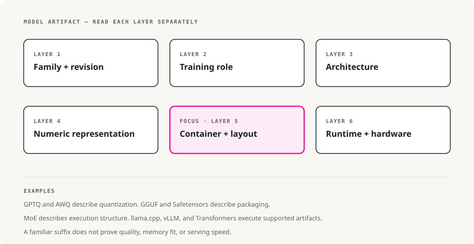
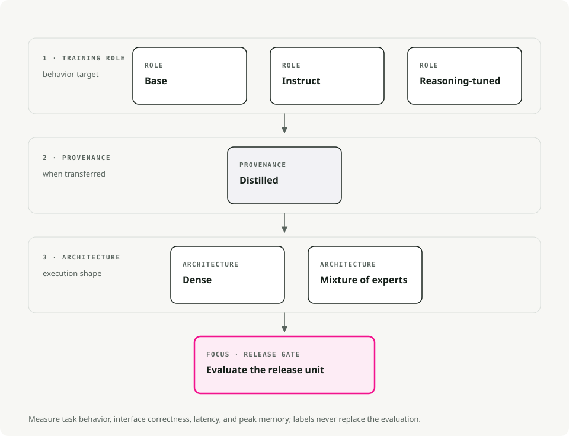
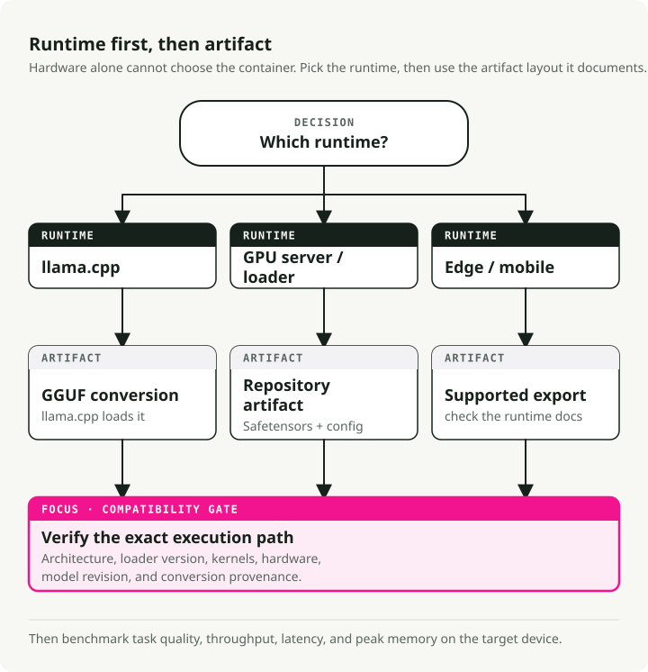
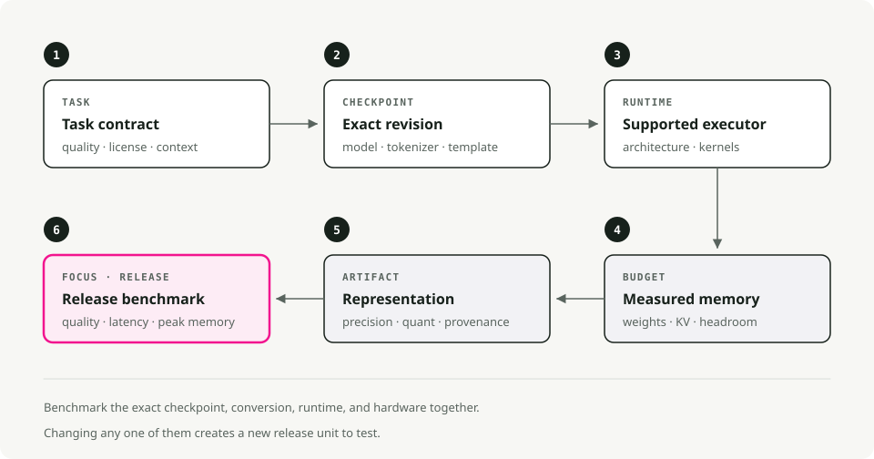

Open-Source LLM Variants and File Formats: Instruct, GGUF, GPTQ, AWQ, and MoE
Why do open-source LLMs have so many confusing names?
Names such as Llama-3.1-8B-Instruct.Q4_K_M.gguf look dense because they describe both the model and its package. Reading those two parts separately makes the name easier to decode.
Open-source LLMs vary along two independent dimensions:
- Model variant: the suffix in the name (
-Instruct,-Distill,-A3B) describes how the model was trained and what it's optimized for. - File format: the extension (
.gguf,.gptq,.awq) describes how the weights are stored and where they run best (CPU, GPU, mobile).
The variant decides what the model can do. The format decides where it can run efficiently.

Choose the variant for the task first. Then choose a format that fits your hardware and runtime.
Model variants explained (the recipe)
The variant tells you what kind of training the weights have been through.
Base models
The raw pre-trained model. It learned language patterns from huge text corpora but was never taught to follow instructions; all it does is predict the next token.
Use a base model when you plan to fine-tune it, study the original pretrained behavior, or avoid instruction-alignment training.
The trade-off is that it won't reliably follow instructions. Ask it "What is the capital of France?" and it might reply "and what is the capital of Germany?" because, from its point of view, you started a list of questions.
Instruct / Chat models
A base model that's been through extra training (Supervised Fine-Tuning plus RLHF) so it knows how to follow human instructions. This is what most people actually want when they say they "want an LLM."
It's the right pick for chatbots, agents, and RAG. Same for function calling, tool use, and day-to-day coding help. Roughly 95% of production use cases land here.
Instruction tuning changes behavior rather than simply adding capability. It makes the model more predictable and useful in conversation, but can narrow the range of outputs compared with the base model.
Reasoning / CoT models
A newer breed like DeepSeek-R1 or the o1-derivatives, trained with Chain-of-Thought reinforcement learning. They "think" before they answer: they generate internal reasoning tokens to work through complex logic, math, or coding problems before producing the final response.
These shine on hard coding tasks, debugging, math problems, and logic puzzles. They also tend to hallucinate less because they double-check their own work.
The catch is latency. They produce a long stream of "thought" tokens that you might not even see, but you still wait for them. They can also be unnecessarily verbose for trivial prompts.
Distilled models
A smaller "student" model trained to mimic a larger "teacher." The result is compressed knowledge: typically 70-80% of the original quality at 30-50% of the size.
They're a good fit for mobile or edge devices, cost-sensitive SaaS where every millisecond matters, and services that need to serve a lot of requests.
You lose a bit of complex reasoning ability, but the efficiency you get back is hard to argue with.
MoE (Mixture-of-Experts): A3B, A22B, etc.
An architecture where the model has many "expert" sub-networks but only activates a subset for each token. "A3B" means 3B parameters are active per token, even though the total model can be 30B+.
That's useful when you want big-model smarts on a 12-24 GB VRAM card without paying full inference cost, or when you're running locally and want the best quality-per-memory ratio.
The downsides: bigger on disk (you still have to store all the experts), and not every inference framework supports MoE routing yet. Check compatibility before you commit to a 50 GB download.

Rule of thumb:
- Default to an Instruct model. It's what most people need.
- Hitting memory or latency limits? Try a Distilled or MoE variant.
- Solving genuinely hard logic? Try a Reasoning model.
File formats explained (the container)
Once you know what model you want, you have to pick how it's packaged. The format mostly decides where it can run and how much memory it needs.
Quantization 101: why we shrink models
Standard models use 16-bit numbers (FP16) for every weight. Precise, but heavy. Quantization drops the weights to 8-bit, 4-bit, or even 2-bit numbers.
- FP16: 2 bytes per parameter. A 13B model is ~26 GB.
- 4-bit: 0.5 bytes per parameter. A 13B model is ~6.5 GB.
You give up a small amount of "intelligence" and get a lot of speed and memory back.
GGUF (.gguf)
The successor to GGML, and the de-facto standard for local inference today. A single file holds the weights, the metadata, and even the prompt template.
It's the right pick on Apple Silicon (M1-M4), where it runs natively with Metal acceleration, and on machines without a dedicated GPU. The tooling story is also the best of any format: llama.cpp, Ollama, and LM Studio all consume GGUF directly.
One file, runs almost everywhere, and there's a quantization level for every memory budget.
Decoding GGUF names (Q3_K_M, Q5_K_M, etc.)
You'll often see a long list of files like Q3_K_M, Q4_K_S, Q5_K_M. They aren't random; they're the K-quant family.
Reading Q3_K_M:
Q3: average 3-bit quantization for the weights.K: uses the K-quant scheme (a newer method that uses non-uniform precision).M: medium block size, whereSis small andLis large.
Which one to pick:
Q3_K_M: the budget option. Quality drops noticeably, but it lets you run larger models on weaker hardware.Q4_K_M: the standard. Best balance of speed, size, and perplexity. For most tasks you can't tell it apart from the uncompressed weights.Q5_K_M: the premium pick. Use it if you have VRAM to spare; quality is very close to FP16 / Q8 while still being relatively compact.
Pro tip: It's often better to run a larger model at lower quantization (Llama-70B at Q3) than a smaller model at high quantization (Llama-8B at Q8). Parameter count usually buys you more intelligence than precision does.
GPTQ (.safetensors + config.json)
Post-training quantization aimed at Nvidia GPUs. It uses second-order information to keep accuracy loss small when it compresses the weights.
It's the right format for production servers running CUDA on Linux, and for high-throughput setups at 4-bit. With the ExLlamaV2 loader, it gets very fast.
The catch is the hardware requirement: it needs a GPU, and it doesn't run efficiently on CPUs or Macs.
AWQ (.safetensors)
Activation-Aware Weight Quantization. It looks at which weights matter most during inference and preserves their precision, instead of compressing every weight uniformly.
It tends to match FP16 accuracy more closely than GPTQ at the same 4-bit budget, and it's supported natively by vLLM. If you care about getting the most quality out of a 4-bit model, AWQ is usually the winner.
PyTorch / Safetensors (FP16/BF16)
Full-precision weights, no quantization. The original format models are released in.
It's what you want for cloud inference on serious GPUs (A100, H100), for fine-tuning and continued training, and for cases where accuracy matters more than memory.
The cost is obvious: a 70B model in FP16 needs around 140 GB of VRAM.

Tip: When in doubt, start with GGUF Q4_K_M. It runs on 8 GB GPUs, modern CPUs, and almost everything in between. You can always optimize once you know the bottleneck.
How to actually run these (serving engines)
You need a serving engine to load the model and answer requests.
- Ollama consumes GGUF and runs on Mac, Linux, and Windows. Easiest CLI tool for local development;
ollama run llama3and you're done. - LM Studio also uses GGUF and gives you a polished GUI on Mac and Windows. Good for browsing models visually before committing to one.
- vLLM is the production standard. It loads AWQ, GPTQ, and FP16 safetensors, and is built for high-performance servers and Docker deployments. GGUF support is still patchy.
- llama.cpp is the engine sitting underneath Ollama. Use it directly when you need low-level integration, or when the target is small (Raspberry Pi, Android, embedded).
Putting it all together: a decision framework
A practical flowchart to walk through. Start with your constraints (hardware and use case), then pick the variant and format that fit.

Quick recommendations by scenario
Building a chatbot on a MacBook Pro (16 GB RAM). Use an Instruct model like Llama-3-8B or Mistral-7B in GGUF Q4_K_M. It runs smoothly on CPU and Metal, fits in memory, and you only have one file to deal with.
RAG system on a server with an RTX 4090 (24 GB VRAM). Use Instruct or MoE (Mixtral 8x7B, Qwen-14B) in EXL2 (via ExLlamaV2) or AWQ 4-bit. That's how you get real value out of 24 GB; EXL2 is very fast on Nvidia cards.
Fine-tuning for domain-specific use on a cloud GPU. Use a Base model in FP16 safetensors. You want full precision for training, and starting from the unaligned base avoids working against the alignment during fine-tuning.
High-throughput API with cost constraints. Use a Distilled model (DeepSeek-Distill or similar) in AWQ 4-bit on vLLM. The throughput-per-dollar is hard to beat.
Common pitfalls and misconceptions
"All 4-bit models are the same quality"
They're not. A QAT 4-bit model (trained in 4-bit) often beats an 8-bit post-training quantized model. The method matters as much as the bit count, and AWQ usually preserves more accuracy than naive GPTQ.
"MoE models work with any inference engine"
Not yet, anyway. llama.cpp handles MoE routing well, but support in other engines varies. Always verify before downloading a 50 GB MoE model.
"Distilled models are just smaller versions of the same thing"
That's the part most people miss. A distilled 7B can beat a vanilla 13B because it learned from a much larger teacher (often 70B+). It's compressed knowledge, not just compressed parameters.
"I should quantize my QAT model further to save space"
Don't bother. QAT models were already trained in low-bit precision. Quantizing them again on top of that usually degrades quality a lot. Use them as released.
"Bigger is always better"
Often, but not always. A well-tuned 8B Instruct model can outperform a poorly-aligned 70B base on a specific task. Match the variant to the use case before you start chasing parameter counts.
TL;DR - just tell me what to download
If you just want something that works:
- Download a
<model-name>-Instruct.Q4_K_M.gguffile from Hugging Face.- Run it with Ollama or LM Studio.
- If it's too slow, try a smaller model or a Distilled variant.
- If you're out of memory, drop to a Q3_K_M quantization.
- If quality isn't good enough, move up to Q5_K_M or pick a larger model.
Start simple and optimize when you actually need to. The defaults work for ~90% of cases.
Key Takeaways
- Model family, tuning style, quantization, and file format are separate decisions.
- Use instruct/chat variants for assistants; base models are for further training or controlled experiments.
- GGUF is the default local inference format for llama.cpp-style runtimes.
- Quantization trades memory and speed against quality. Benchmark on your task instead of trusting one global rule.
References
- llama.cpp GGUF documentation - GGUF model format.
- Hugging Face Transformers documentation - model loading and task APIs.
- GPTQ paper - post-training quantization for generative models.
- AWQ paper - activation-aware weight quantization.